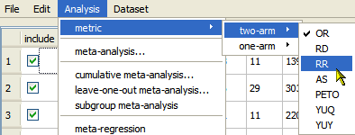

For two-arm studies with binary data, as shown in the preceding example, the default metric for the effect size is the odds ratio (OR). To change the metric:

When you select a metric, the effect sizes and confidence intervals in the data table are immediately updated.
Note: If you select a one-arm metric, the metric is only applied to the data columns labeled Tx An and Tx AN. The Tx Bn and Tx BN columns are shaded grey, as shown below. When you run an analysis, only the data in the Tx An and Tx AN columns are included.